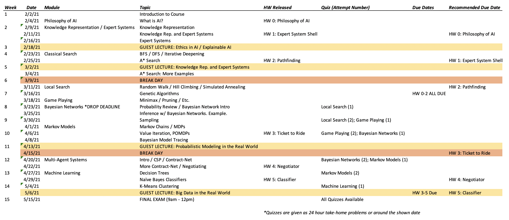

The following table shows the current plan for our semester schedule. This schedule is subject to change as the semester unfolds.

| Topic | Link | Description | Reading (if applicable) |
|---|---|---|---|
| 01 - Course Introduction | Slides (pdf) | Introduction to Course, Syllabus information, etc. | |
| 02 - Intro to AI | Slides (pdf) | What is AI? What are the sub-fields of AI? Is AI possible? | |
| 03 - Knowledge Representation | Slides (pdf) | Classic AI using construction of knowledge within some data structure. | Newell and Simon |
| 04 - Expert Systems | Slides (pdf) | Early expert systems and some simple algorithms. | |
| 05 - Classic Search | Slides (pdf) | Graphs, BFS, DFS, and searching on large graphs. | |
| 06 - Local Search | Slides (pdf) | Simulated Annealing and Genetic Algorithms. | |
| 07 - Game Playing | Slides (pdf) | Using search algorithms to play games for you. | |
| 08 - Bayesian Networks | Slides (pdf) | Making predictions using bayesian networks. | |
| 09 - Markov Models | Slides (pdf) | Using markov models to model action-reward structures. | |
| 10 - Bayesian Model Tracing | Slides (pdf) | An example application of a HMM to a real problem in education. | |
| 11 - Mult-Agent Systems | Slides (pdf) | Some basic issues involved in multipel AIs working together (or against each other) | |
| 12 - ML: Version Spaces | Slides (pdf) | Version Space Learning. The Basics of ML | |
| 13 - ML: Decision Trees | Slides (pdf) | ID3 and simple decision tree learning | |
| 14 - ML: Regressions | Slides (pdf) | Basic ML regressions. | |
| 15 - ML: Naive Bayes | Slides (pdf) | Naive Bayes classifiers and associated algorithms. | |
| 16 - ML: Neural Nets | Slides (pdf) | Basic neural networks and backpropogation. | |
| 17 - ML: Clustering | Slides (n/a) | Simple unsupervised learning. |